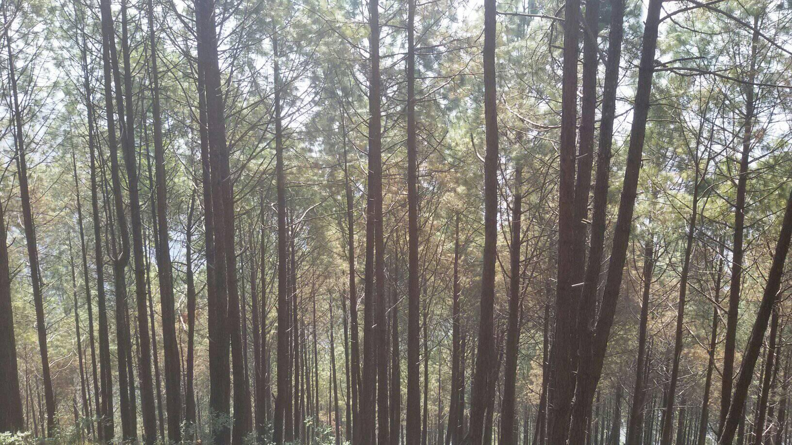
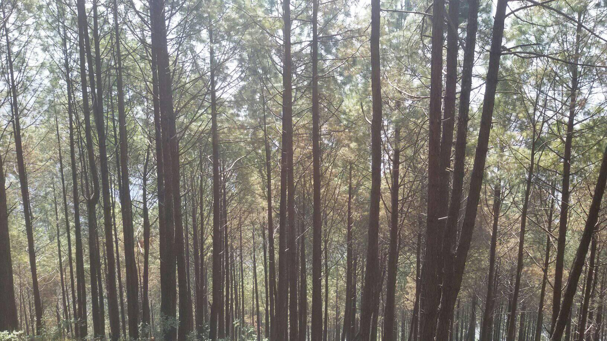
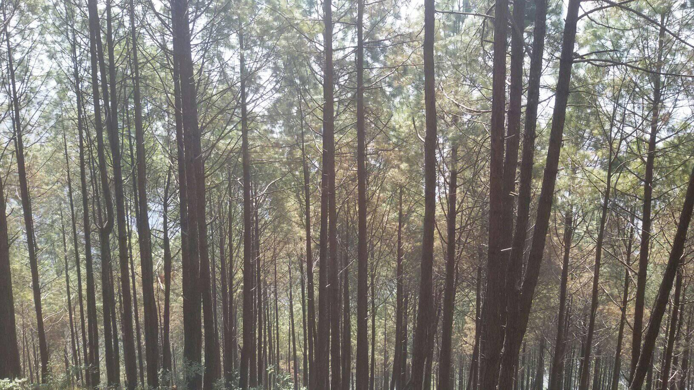

Some Photos
 

A natural temple cave (note 1) dedicated to the "Hidden God" (gupt = secret, ishvar = Lord, i.e. Shiva) is sacred to Hindu believers and perennially graced with a venerable lingam (stalagmite speleothem) and relic gours but periodically filled, in parts, with decapitated flower heads in addition of the peculiar smell of decomposing milk and rancid butter resulting from offerings sacrificed left by pious devotees. ETYMOLOGY: So far, I saw the cave referred to as to be completed Gupta Swory Cave RUBINSTEIN (1987) Gupteswary Cave RUBINSTEIN (1987) Gupteswor Cave RUBINSTEIN (1987) Gupteswary Gupha DUCLUZAUX et al. (2001: 1944) Mahadev Gupha STEIN (1988: 16 footnote 42) Papi Brewa Darma Brewa STEIN (1988: 16 footnote 42) SITUATION: Somewhere in the vicinity of Sunula Bazar or Sunoulabazar (note 2), a village at about halfway (some 6 km or 8 km on foot) from Adamghat (note 3) uphill north or from Dhadingbesi (note 4) uphill south. CAVE DESCRIPTION: »This cave lies in a thick layer of limestone that forms a steep, grassy ridge. The cave is basically one chamber divided in two by the lowering ceiling height. There is a small alcove to the right near the entrance. Once you have reached the floor of the cave, a slope on the right leads up to a small side room. Here there are some fine dry rimstone dams about a foot and a half deep« (RUBINSTEIN 1987). CULTURAL HISTORY - folklore: During the annual spring festival (maha-) Shivaratri (note 5), »offerings of cow's milk are given to Ligum [sic! for: lingam] (a stalagmite) ... the whole cave is filled with flowers and tika that are given in daily offerings« (RUBINSTEIN 1987). DUCLUZAUX et al. (2001: 1944) misleads to the northern rim of the Kathmandu valley tells us a tale after an acknowledgement source according to which »les massifs autour de Kathmandu renferment des calcaires et des petites grottes dont … la Gupteswary Gupha à 2520 m d'altitude, lieu de pélerinage …«
